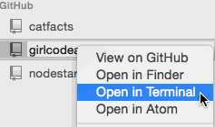

Starting on the project
Let's get ready to work on the team project.
If you are sharing a computer, make sure you are signed in on the GitHub website, and in GitHub Desktop (an app on your computer). After you have signed into both, close Chrome and open it again to let it figure out that GitHub Desktop is ready.
1. Copy the project on to to your computer
(You only have to do this once. Next time, you can skip this step because the project will already be on your computer.)
1. Go to the list of Girl Code projects at https://github.com/girlcodeakl/
2. Your team's project should be on the list (ask which one it is if we haven't said). Click on the project to go to the project page.
3. Click 'Clone or download', then choose 'Open in desktop' to clone the project using Github Desktop.


This will create a clone (a copy) of the project on your computer. Keep a note of where on your computer it was created!
Right click on the project name in Github Desktop and choose 'Open in Terminal' or 'Open in Git Shell'
This will open a Terminal or PowerShell window in the right folder.
Now you need to install the Node dependencies. Do this with the command npm install in Terminal\PowerShell.
Next, start the app with this command: node index.js
Your terminal should now be busy running the server.
Go back to your web browser and go to http://localhost:3000/ to visit your local server.
It should look a lot like our last project, because we are using the same code as a starting point.
Welcome to the workforce
From now on, Girl Code will always start this way:
- Find a partner and decide who's driving and who's navigating.
- Planning meeting: We talk about the tasks in this week's sprint.
- Choose a task from the project wall, move it to 'Work in Progress' and write your names next to it.
- Go to the project's Issues page on GitHub, and assign the issue to you and your partner.
- In Github Desktop, click 'Sync' to update and make sure you're in the master branch.
- In GitHub Desktop, create a new branch for your work. Give it a name based on the task, i.e. "2-make-submit-not-go-to-a-new-page" for issue 2.
Then you can work on the task! Make a commit whenever you feel you've completed a step.
When the job is done:
- Make sure you have committed all your changes
- Click Sync (or Publish) to save your branch back to GitHub
- Create a Pull Request. Write a short comment that includes the issue number with a hashtag, i.e. "fixed #2" The tag lets Github know it should display that Pull Request when someone looks at that issue.
- Ask one of our mentors to do a code review on the projector.
- The mentor will merge your code (or ask you to make some changes first).
- In GitHub, close the issue.
- On the project wall, move the issue to the 'Done' column.
Pick up another ticket and start all over again! Remember to go back to the master branch, Sync, then create a new branch for the new ticket.